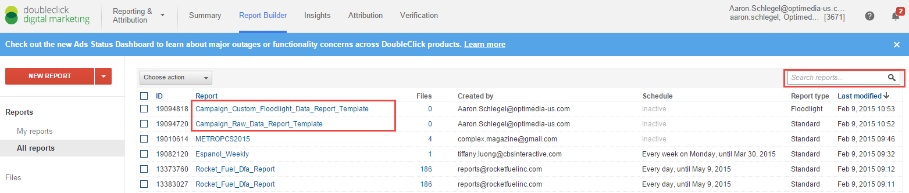

Campaign reporting is typically pulled each Monday for the previous Monday - Sunday date range. Two reports are required, a Site Activity and Custom Floodlight Variable report. After the reports are downloaded, various steps to manipulate the data are made in order to present the various account teams with readable data and reporting. These reports are used by the media team to make optimizations to the campaigns and report to the clients on performance.
Log into DFA using your login information. You will be brought to the DFA Report Summary screen. Click on Report Builder at the top.
The Report Builder screen contains all of the reports created by users under the account. You can search for reports using the search bar at the top right. For a new campaign, report templates have been provided that can be copied and adjusted depending on reporting needs. These reports are named the following:
Site Activity: Campaign_Raw_Data_Report_Template Custom Floodlight: Campaign_Custom_Floodlight_Data_Report_Template
Click on the Raw Data report to be taken to the Report Setup screen. Raw Data reports will generally look like the below, with various options for changing the file type, date range, report filters and more. At the bottom, you can choose to save your changes to the report and Run Now, which will download a copy of the report. You can also choose to have the report emailed to you if you prefer.
For a new campaign, you will need to add a filter for Campaign or you will pull all campaigns that ran through the choosen date range.
Click the +add filter button and choose Campaign.
You can now choose your specific campaign to pull reporting.
Other than date range, Campaign should be the only dimension you need to change when starting reporting for a new campaign. You can then save the report with a different name to keep your options saved to avoid editing the report each week.
A list of dimensions and metrics, that should be included in the report can be found in the Index.
If you haven’t saved the report as a different name, do that now before selecting Run now.
The Custom Floodlight report is almost the exact same as the Raw Data report. As before, you should just need to add a campaign filter before saving and running the report.
After your Raw Data and Custom Floodlight Variable reports are finished downloading, you are ready to move onto creating the media team pivot!
For new reports, open the distribution copy of the report template and save it as a copy. Open and copy the entire sheet in the Site Activity and Custom Floodlight reports and paste the contents in the tabs labeled SA and CFV.
Make sure to copy the entirety of the Site Activity and Custom Floodlight reports into the template.
With the data pasted in, you can now run the reporting process! Go to the Developer tab in Excel and click Macros. If you do not see the Developer tab in Excel, read the below on how to add it.
If you do not see the Developer tab at the top of Excel, similar to the above, click on the File tab at the top-left corner and click Options.
On the Options screen, click Customize Ribbon and then check the box next to Developer on the right-hand side. Click OK and the Developer tab should now display!
Click on the Developer tab and select Macros.
The Macros screen will show several different macros. The reporting process macro is named ‘DFA_Reporting’. Select this macro and the report will generate. That’s all there is to it!
Depending on the size of the data, processing can take several minutes to complete. The cleaned, merged data will be inputted into the data tab. If there is data already present in this tab, the process will combine that data with the new data. You can then save the report and make any necessary adjustments such as adding passback data from publishers.